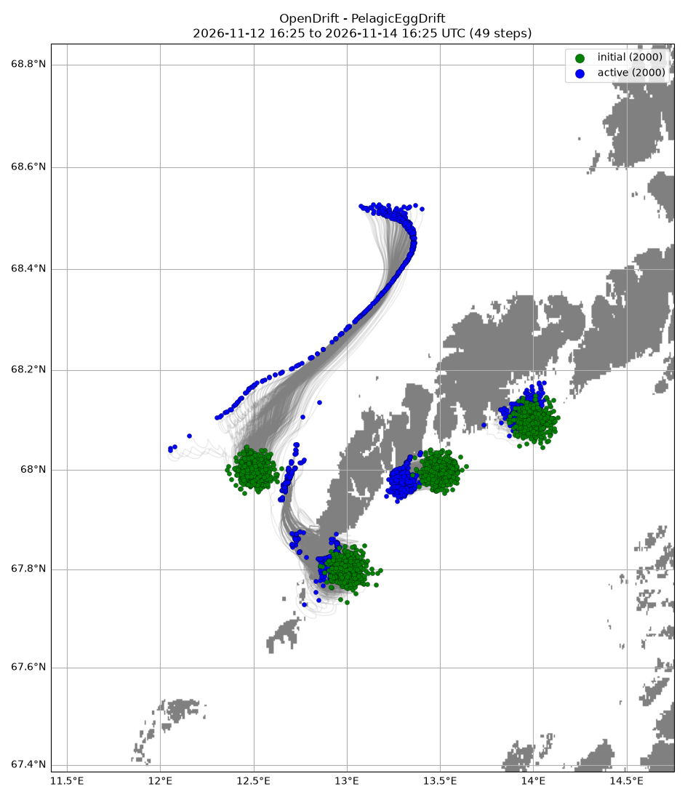
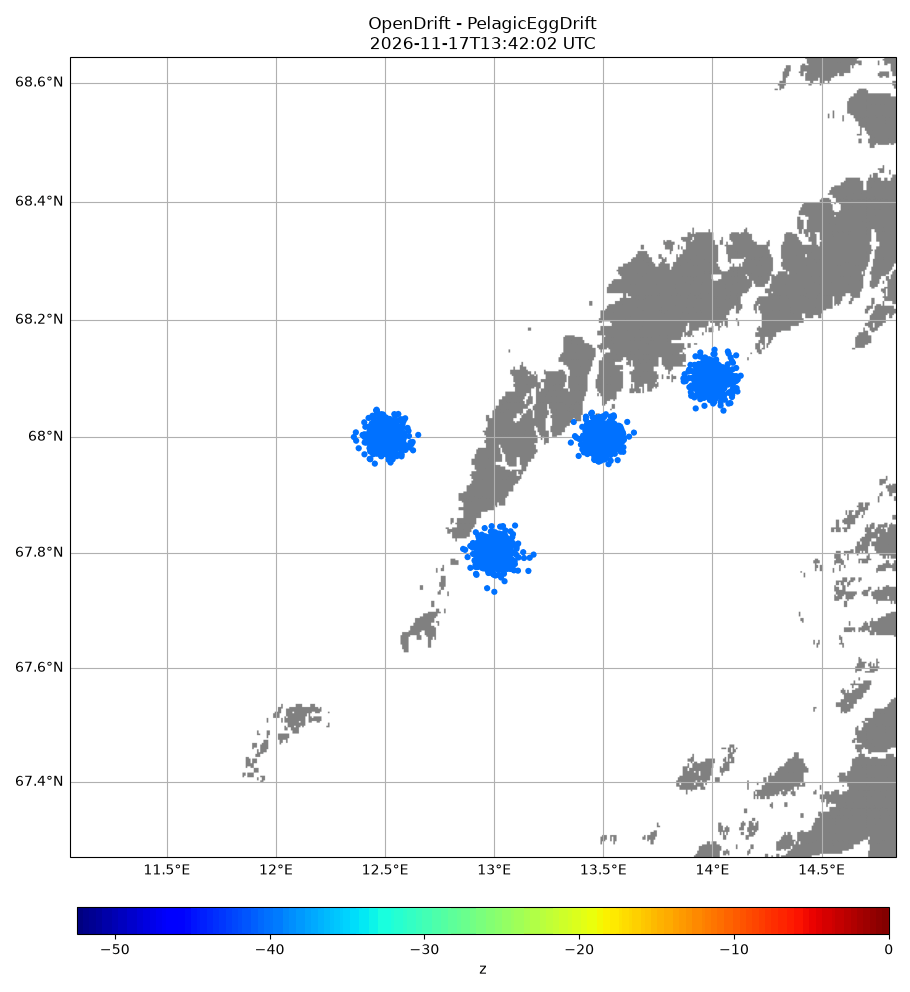
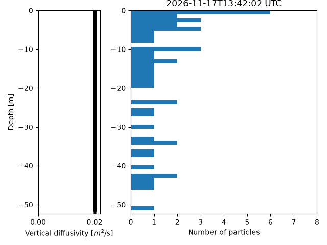

Note
Go to the end to download the full example code.
Cod egg
from opendrift.readers import reader_netCDF_CF_generic
from opendrift.models.pelagicegg import PelagicEggDrift
from datetime import datetime, timedelta
o = PelagicEggDrift(loglevel=20) # Set loglevel to 0 for debug information
# Forcing with Topaz ocean model and MEPS atmospheric model
o.add_readers_from_list([
'https://thredds.met.no/thredds/dodsC/cmems/topaz6/dataset-topaz6-arc-15min-3km-be.ncml',
'https://thredds.met.no/thredds/dodsC/mepslatest/meps_lagged_6_h_latest_2_5km_latest.nc'])
13:35:48 INFO opendrift:579: OpenDriftSimulation initialised (version 1.14.11 / v1.14.12-93-gcc8f52e)
Adjusting some configuration
o.set_config('drift:vertical_mixing', True)
o.set_config('vertical_mixing:diffusivitymodel', 'windspeed_Sundby1983') # windspeed parameterization for eddy diffusivity
Vertical mixing requires fast time step
o.set_config('vertical_mixing:timestep', 60.) # seconds
spawn NEA cod eggs at defined position and time
time = datetime.now()
o.seed_elements(14. , 68.1, z=-40, radius=2000, number=500,
time=time, diameter=0.0014, neutral_buoyancy_salinity=31.25)
o.seed_elements(12.5, 68., z=-40, radius=2000, number=500,
time=time, diameter=0.0014, neutral_buoyancy_salinity=31.25)
o.seed_elements(13.5, 68., z=-40, radius=2000, number=500,
time=time, diameter=0.0014, neutral_buoyancy_salinity=31.25)
o.seed_elements(13., 67.8, z=-40, radius=2000, number=500,
time=time, diameter=0.0014, neutral_buoyancy_salinity=31.25)
13:35:48 INFO opendrift.models.basemodel.environment:204: Adding a global landmask from GSHHG
13:35:55 INFO opendrift.models.basemodel.environment:238: Fallback values will be used for the following variables which have no readers:
13:35:55 INFO opendrift.models.basemodel.environment:241: x_sea_water_velocity: 0.000000
13:35:55 INFO opendrift.models.basemodel.environment:241: y_sea_water_velocity: 0.000000
13:35:55 INFO opendrift.models.basemodel.environment:241: sea_surface_height: 0.000000
13:35:55 INFO opendrift.models.basemodel.environment:241: sea_surface_wave_significant_height: 0.000000
13:35:55 INFO opendrift.models.basemodel.environment:241: sea_ice_area_fraction: 0.000000
13:35:55 INFO opendrift.models.basemodel.environment:241: x_wind: 0.000000
13:35:55 INFO opendrift.models.basemodel.environment:241: y_wind: 0.000000
13:35:55 INFO opendrift.models.basemodel.environment:241: sea_floor_depth_below_sea_level: 100.000000
13:35:55 INFO opendrift.models.basemodel.environment:241: ocean_vertical_diffusivity: 0.020000
13:35:55 INFO opendrift.models.basemodel.environment:241: ocean_mixed_layer_thickness: 50.000000
13:35:55 INFO opendrift.models.basemodel.environment:241: sea_water_temperature: 10.000000
13:35:55 INFO opendrift.models.basemodel.environment:241: sea_water_salinity: 34.000000
13:35:55 INFO opendrift.models.basemodel.environment:241: surface_downward_x_stress: 0.000000
13:35:55 INFO opendrift.models.basemodel.environment:241: surface_downward_y_stress: 0.000000
13:35:55 INFO opendrift.models.basemodel.environment:241: turbulent_kinetic_energy: 0.000000
13:35:55 INFO opendrift.models.basemodel.environment:241: turbulent_generic_length_scale: 0.000000
13:35:55 INFO opendrift.models.basemodel.environment:241: upward_sea_water_velocity: 0.000000
Running model
o.run(duration=timedelta(hours=48), time_step=3600)
13:35:55 INFO opendrift:1932: Storing previous values of element property lon because of condition (('general:coastline_action', 'in', ['stranding', 'previous']), 'or', ('general:seafloor_action', 'in', ['previous']))
13:35:55 INFO opendrift:1932: Storing previous values of element property lat because of condition (('general:coastline_action', 'in', ['stranding', 'previous']), 'or', ('general:seafloor_action', 'in', ['previous']))
13:35:55 INFO opendrift:968: Using existing reader for land_binary_mask to move elements to ocean
13:35:55 INFO opendrift:1000: All points are in ocean
13:35:55 INFO opendrift:2248: 2026-11-17 13:35:48.426316 - step 1 of 48 - 2000 active elements (0 deactivated)
13:35:55 INFO opendrift.readers:67: Opening file with xr.open_dataset
13:36:00 INFO opendrift.readers.reader_netCDF_CF_generic:340: Detected dimensions: {'x': 'x', 'y': 'y', 'time': 'time'}
13:36:00 INFO opendrift.readers:67: Opening file with xr.open_dataset
13:36:01 INFO opendrift.readers.reader_netCDF_CF_generic:340: Detected dimensions: {'time': 'time', 'x': 'x', 'y': 'y'}
13:36:05 WARNING opendrift.readers.interpolation.structured:63: Ensemble data currently not extrapolated towards seafloor
13:36:05 WARNING opendrift.readers.interpolation.structured:63: Ensemble data currently not extrapolated towards seafloor
13:36:06 WARNING opendrift.readers.interpolation.structured:63: Ensemble data currently not extrapolated towards seafloor
13:36:06 WARNING opendrift.readers.interpolation.structured:63: Ensemble data currently not extrapolated towards seafloor
13:36:06 INFO opendrift:2248: 2026-11-17 14:35:48.426316 - step 2 of 48 - 2000 active elements (0 deactivated)
13:36:09 WARNING opendrift.readers.interpolation.structured:63: Ensemble data currently not extrapolated towards seafloor
13:36:09 WARNING opendrift.readers.interpolation.structured:63: Ensemble data currently not extrapolated towards seafloor
13:36:09 INFO opendrift:2248: 2026-11-17 15:35:48.426316 - step 3 of 48 - 2000 active elements (0 deactivated)
13:36:13 WARNING opendrift.readers.interpolation.structured:63: Ensemble data currently not extrapolated towards seafloor
13:36:13 WARNING opendrift.readers.interpolation.structured:63: Ensemble data currently not extrapolated towards seafloor
13:36:13 INFO opendrift:2248: 2026-11-17 16:35:48.426316 - step 4 of 48 - 2000 active elements (0 deactivated)
13:36:17 WARNING opendrift.readers.interpolation.structured:63: Ensemble data currently not extrapolated towards seafloor
13:36:17 WARNING opendrift.readers.interpolation.structured:63: Ensemble data currently not extrapolated towards seafloor
13:36:17 INFO opendrift:2248: 2026-11-17 17:35:48.426316 - step 5 of 48 - 2000 active elements (0 deactivated)
13:36:21 WARNING opendrift.readers.interpolation.structured:63: Ensemble data currently not extrapolated towards seafloor
13:36:21 WARNING opendrift.readers.interpolation.structured:63: Ensemble data currently not extrapolated towards seafloor
13:36:21 INFO opendrift:2248: 2026-11-17 18:35:48.426316 - step 6 of 48 - 2000 active elements (0 deactivated)
13:36:24 WARNING opendrift.readers.interpolation.structured:63: Ensemble data currently not extrapolated towards seafloor
13:36:24 WARNING opendrift.readers.interpolation.structured:63: Ensemble data currently not extrapolated towards seafloor
13:36:24 INFO opendrift:2248: 2026-11-17 19:35:48.426316 - step 7 of 48 - 2000 active elements (0 deactivated)
13:36:28 WARNING opendrift.readers.interpolation.structured:63: Ensemble data currently not extrapolated towards seafloor
13:36:28 WARNING opendrift.readers.interpolation.structured:63: Ensemble data currently not extrapolated towards seafloor
13:36:29 INFO opendrift:2248: 2026-11-17 20:35:48.426316 - step 8 of 48 - 2000 active elements (0 deactivated)
13:36:32 WARNING opendrift.readers.interpolation.structured:63: Ensemble data currently not extrapolated towards seafloor
13:36:32 WARNING opendrift.readers.interpolation.structured:63: Ensemble data currently not extrapolated towards seafloor
13:36:32 INFO opendrift:2248: 2026-11-17 21:35:48.426316 - step 9 of 48 - 2000 active elements (0 deactivated)
13:36:37 WARNING opendrift.readers.interpolation.structured:63: Ensemble data currently not extrapolated towards seafloor
13:36:37 WARNING opendrift.readers.interpolation.structured:63: Ensemble data currently not extrapolated towards seafloor
13:36:37 INFO opendrift:2248: 2026-11-17 22:35:48.426316 - step 10 of 48 - 2000 active elements (0 deactivated)
13:36:41 WARNING opendrift.readers.interpolation.structured:63: Ensemble data currently not extrapolated towards seafloor
13:36:41 WARNING opendrift.readers.interpolation.structured:63: Ensemble data currently not extrapolated towards seafloor
13:36:42 INFO opendrift:2248: 2026-11-17 23:35:48.426316 - step 11 of 48 - 2000 active elements (0 deactivated)
13:36:46 WARNING opendrift.readers.interpolation.structured:63: Ensemble data currently not extrapolated towards seafloor
13:36:46 WARNING opendrift.readers.interpolation.structured:63: Ensemble data currently not extrapolated towards seafloor
13:36:46 INFO opendrift:2248: 2026-11-18 00:35:48.426316 - step 12 of 48 - 2000 active elements (0 deactivated)
13:36:51 WARNING opendrift.readers.interpolation.structured:63: Ensemble data currently not extrapolated towards seafloor
13:36:51 WARNING opendrift.readers.interpolation.structured:63: Ensemble data currently not extrapolated towards seafloor
13:36:51 INFO opendrift:2248: 2026-11-18 01:35:48.426316 - step 13 of 48 - 2000 active elements (0 deactivated)
13:36:56 WARNING opendrift.readers.interpolation.structured:63: Ensemble data currently not extrapolated towards seafloor
13:36:56 WARNING opendrift.readers.interpolation.structured:63: Ensemble data currently not extrapolated towards seafloor
13:36:56 INFO opendrift:2248: 2026-11-18 02:35:48.426316 - step 14 of 48 - 2000 active elements (0 deactivated)
13:37:02 WARNING opendrift.readers.interpolation.structured:63: Ensemble data currently not extrapolated towards seafloor
13:37:02 WARNING opendrift.readers.interpolation.structured:63: Ensemble data currently not extrapolated towards seafloor
13:37:02 INFO opendrift:2248: 2026-11-18 03:35:48.426316 - step 15 of 48 - 2000 active elements (0 deactivated)
13:37:08 WARNING opendrift.readers.interpolation.structured:63: Ensemble data currently not extrapolated towards seafloor
13:37:08 WARNING opendrift.readers.interpolation.structured:63: Ensemble data currently not extrapolated towards seafloor
13:37:08 INFO opendrift:2248: 2026-11-18 04:35:48.426316 - step 16 of 48 - 2000 active elements (0 deactivated)
13:37:13 WARNING opendrift.readers.interpolation.structured:63: Ensemble data currently not extrapolated towards seafloor
13:37:13 WARNING opendrift.readers.interpolation.structured:63: Ensemble data currently not extrapolated towards seafloor
13:37:13 INFO opendrift:2248: 2026-11-18 05:35:48.426316 - step 17 of 48 - 2000 active elements (0 deactivated)
13:37:18 WARNING opendrift.readers.interpolation.structured:63: Ensemble data currently not extrapolated towards seafloor
13:37:18 WARNING opendrift.readers.interpolation.structured:63: Ensemble data currently not extrapolated towards seafloor
13:37:18 INFO opendrift:2248: 2026-11-18 06:35:48.426316 - step 18 of 48 - 2000 active elements (0 deactivated)
13:37:24 WARNING opendrift.readers.interpolation.structured:63: Ensemble data currently not extrapolated towards seafloor
13:37:24 WARNING opendrift.readers.interpolation.structured:63: Ensemble data currently not extrapolated towards seafloor
13:37:24 INFO opendrift:2248: 2026-11-18 07:35:48.426316 - step 19 of 48 - 2000 active elements (0 deactivated)
13:37:29 WARNING opendrift.readers.interpolation.structured:63: Ensemble data currently not extrapolated towards seafloor
13:37:29 WARNING opendrift.readers.interpolation.structured:63: Ensemble data currently not extrapolated towards seafloor
13:37:29 INFO opendrift:2248: 2026-11-18 08:35:48.426316 - step 20 of 48 - 2000 active elements (0 deactivated)
13:37:33 WARNING opendrift.readers.interpolation.structured:63: Ensemble data currently not extrapolated towards seafloor
13:37:33 WARNING opendrift.readers.interpolation.structured:63: Ensemble data currently not extrapolated towards seafloor
13:37:33 INFO opendrift:2248: 2026-11-18 09:35:48.426316 - step 21 of 48 - 2000 active elements (0 deactivated)
13:37:38 WARNING opendrift.readers.interpolation.structured:63: Ensemble data currently not extrapolated towards seafloor
13:37:38 WARNING opendrift.readers.interpolation.structured:63: Ensemble data currently not extrapolated towards seafloor
13:37:38 INFO opendrift:2248: 2026-11-18 10:35:48.426316 - step 22 of 48 - 2000 active elements (0 deactivated)
13:37:43 WARNING opendrift.readers.interpolation.structured:63: Ensemble data currently not extrapolated towards seafloor
13:37:43 WARNING opendrift.readers.interpolation.structured:63: Ensemble data currently not extrapolated towards seafloor
13:37:43 INFO opendrift:2248: 2026-11-18 11:35:48.426316 - step 23 of 48 - 2000 active elements (0 deactivated)
13:37:47 WARNING opendrift.readers.interpolation.structured:63: Ensemble data currently not extrapolated towards seafloor
13:37:47 WARNING opendrift.readers.interpolation.structured:63: Ensemble data currently not extrapolated towards seafloor
13:37:47 INFO opendrift:2248: 2026-11-18 12:35:48.426316 - step 24 of 48 - 2000 active elements (0 deactivated)
13:37:52 WARNING opendrift.readers.interpolation.structured:63: Ensemble data currently not extrapolated towards seafloor
13:37:52 WARNING opendrift.readers.interpolation.structured:63: Ensemble data currently not extrapolated towards seafloor
13:37:52 INFO opendrift:2248: 2026-11-18 13:35:48.426316 - step 25 of 48 - 2000 active elements (0 deactivated)
13:37:57 WARNING opendrift.readers.interpolation.structured:63: Ensemble data currently not extrapolated towards seafloor
13:37:57 WARNING opendrift.readers.interpolation.structured:63: Ensemble data currently not extrapolated towards seafloor
13:37:57 INFO opendrift:2248: 2026-11-18 14:35:48.426316 - step 26 of 48 - 2000 active elements (0 deactivated)
13:38:02 WARNING opendrift.readers.interpolation.structured:63: Ensemble data currently not extrapolated towards seafloor
13:38:02 WARNING opendrift.readers.interpolation.structured:63: Ensemble data currently not extrapolated towards seafloor
13:38:02 INFO opendrift:2248: 2026-11-18 15:35:48.426316 - step 27 of 48 - 2000 active elements (0 deactivated)
13:38:06 WARNING opendrift.readers.interpolation.structured:63: Ensemble data currently not extrapolated towards seafloor
13:38:06 WARNING opendrift.readers.interpolation.structured:63: Ensemble data currently not extrapolated towards seafloor
13:38:07 INFO opendrift:2248: 2026-11-18 16:35:48.426316 - step 28 of 48 - 2000 active elements (0 deactivated)
13:38:11 WARNING opendrift.readers.interpolation.structured:63: Ensemble data currently not extrapolated towards seafloor
13:38:11 WARNING opendrift.readers.interpolation.structured:63: Ensemble data currently not extrapolated towards seafloor
13:38:11 INFO opendrift:2248: 2026-11-18 17:35:48.426316 - step 29 of 48 - 2000 active elements (0 deactivated)
13:38:17 WARNING opendrift.readers.interpolation.structured:63: Ensemble data currently not extrapolated towards seafloor
13:38:17 WARNING opendrift.readers.interpolation.structured:63: Ensemble data currently not extrapolated towards seafloor
13:38:18 INFO opendrift:2248: 2026-11-18 18:35:48.426316 - step 30 of 48 - 2000 active elements (0 deactivated)
13:38:24 WARNING opendrift.readers.interpolation.structured:63: Ensemble data currently not extrapolated towards seafloor
13:38:24 WARNING opendrift.readers.interpolation.structured:63: Ensemble data currently not extrapolated towards seafloor
13:38:24 INFO opendrift:2248: 2026-11-18 19:35:48.426316 - step 31 of 48 - 2000 active elements (0 deactivated)
13:38:28 WARNING opendrift.readers.interpolation.structured:63: Ensemble data currently not extrapolated towards seafloor
13:38:28 WARNING opendrift.readers.interpolation.structured:63: Ensemble data currently not extrapolated towards seafloor
13:38:29 INFO opendrift:2248: 2026-11-18 20:35:48.426316 - step 32 of 48 - 2000 active elements (0 deactivated)
13:38:33 WARNING opendrift.readers.interpolation.structured:63: Ensemble data currently not extrapolated towards seafloor
13:38:33 WARNING opendrift.readers.interpolation.structured:63: Ensemble data currently not extrapolated towards seafloor
13:38:34 INFO opendrift:2248: 2026-11-18 21:35:48.426316 - step 33 of 48 - 2000 active elements (0 deactivated)
13:38:37 WARNING opendrift.readers.interpolation.structured:63: Ensemble data currently not extrapolated towards seafloor
13:38:37 WARNING opendrift.readers.interpolation.structured:63: Ensemble data currently not extrapolated towards seafloor
13:38:37 INFO opendrift:2248: 2026-11-18 22:35:48.426316 - step 34 of 48 - 2000 active elements (0 deactivated)
13:38:42 WARNING opendrift.readers.interpolation.structured:63: Ensemble data currently not extrapolated towards seafloor
13:38:42 WARNING opendrift.readers.interpolation.structured:63: Ensemble data currently not extrapolated towards seafloor
13:38:42 INFO opendrift:2248: 2026-11-18 23:35:48.426316 - step 35 of 48 - 2000 active elements (0 deactivated)
13:38:46 WARNING opendrift.readers.interpolation.structured:63: Ensemble data currently not extrapolated towards seafloor
13:38:46 WARNING opendrift.readers.interpolation.structured:63: Ensemble data currently not extrapolated towards seafloor
13:38:46 INFO opendrift:2248: 2026-11-19 00:35:48.426316 - step 36 of 48 - 2000 active elements (0 deactivated)
13:38:51 WARNING opendrift.readers.interpolation.structured:63: Ensemble data currently not extrapolated towards seafloor
13:38:51 WARNING opendrift.readers.interpolation.structured:63: Ensemble data currently not extrapolated towards seafloor
13:38:51 INFO opendrift:2248: 2026-11-19 01:35:48.426316 - step 37 of 48 - 2000 active elements (0 deactivated)
13:38:55 WARNING opendrift.readers.interpolation.structured:63: Ensemble data currently not extrapolated towards seafloor
13:38:55 WARNING opendrift.readers.interpolation.structured:63: Ensemble data currently not extrapolated towards seafloor
13:38:55 INFO opendrift:2248: 2026-11-19 02:35:48.426316 - step 38 of 48 - 2000 active elements (0 deactivated)
13:38:59 WARNING opendrift.readers.interpolation.structured:63: Ensemble data currently not extrapolated towards seafloor
13:38:59 WARNING opendrift.readers.interpolation.structured:63: Ensemble data currently not extrapolated towards seafloor
13:38:59 INFO opendrift:2248: 2026-11-19 03:35:48.426316 - step 39 of 48 - 2000 active elements (0 deactivated)
13:39:04 WARNING opendrift.readers.interpolation.structured:63: Ensemble data currently not extrapolated towards seafloor
13:39:04 WARNING opendrift.readers.interpolation.structured:63: Ensemble data currently not extrapolated towards seafloor
13:39:04 INFO opendrift:2248: 2026-11-19 04:35:48.426316 - step 40 of 48 - 2000 active elements (0 deactivated)
13:39:08 WARNING opendrift.readers.interpolation.structured:63: Ensemble data currently not extrapolated towards seafloor
13:39:08 WARNING opendrift.readers.interpolation.structured:63: Ensemble data currently not extrapolated towards seafloor
13:39:08 INFO opendrift:2248: 2026-11-19 05:35:48.426316 - step 41 of 48 - 2000 active elements (0 deactivated)
13:39:12 WARNING opendrift.readers.interpolation.structured:63: Ensemble data currently not extrapolated towards seafloor
13:39:12 WARNING opendrift.readers.interpolation.structured:63: Ensemble data currently not extrapolated towards seafloor
13:39:12 INFO opendrift:2248: 2026-11-19 06:35:48.426316 - step 42 of 48 - 2000 active elements (0 deactivated)
13:39:16 WARNING opendrift.readers.interpolation.structured:63: Ensemble data currently not extrapolated towards seafloor
13:39:16 WARNING opendrift.readers.interpolation.structured:63: Ensemble data currently not extrapolated towards seafloor
13:39:16 INFO opendrift:2248: 2026-11-19 07:35:48.426316 - step 43 of 48 - 2000 active elements (0 deactivated)
13:39:20 WARNING opendrift.readers.interpolation.structured:63: Ensemble data currently not extrapolated towards seafloor
13:39:20 WARNING opendrift.readers.interpolation.structured:63: Ensemble data currently not extrapolated towards seafloor
13:39:20 INFO opendrift:2248: 2026-11-19 08:35:48.426316 - step 44 of 48 - 2000 active elements (0 deactivated)
13:39:24 WARNING opendrift.readers.interpolation.structured:63: Ensemble data currently not extrapolated towards seafloor
13:39:24 WARNING opendrift.readers.interpolation.structured:63: Ensemble data currently not extrapolated towards seafloor
13:39:25 INFO opendrift:2248: 2026-11-19 09:35:48.426316 - step 45 of 48 - 2000 active elements (0 deactivated)
13:39:29 WARNING opendrift.readers.interpolation.structured:63: Ensemble data currently not extrapolated towards seafloor
13:39:29 WARNING opendrift.readers.interpolation.structured:63: Ensemble data currently not extrapolated towards seafloor
13:39:29 INFO opendrift:2248: 2026-11-19 10:35:48.426316 - step 46 of 48 - 2000 active elements (0 deactivated)
13:39:33 WARNING opendrift.readers.interpolation.structured:63: Ensemble data currently not extrapolated towards seafloor
13:39:33 WARNING opendrift.readers.interpolation.structured:63: Ensemble data currently not extrapolated towards seafloor
13:39:33 INFO opendrift:2248: 2026-11-19 11:35:48.426316 - step 47 of 48 - 2000 active elements (0 deactivated)
13:39:38 WARNING opendrift.readers.interpolation.structured:63: Ensemble data currently not extrapolated towards seafloor
13:39:38 WARNING opendrift.readers.interpolation.structured:63: Ensemble data currently not extrapolated towards seafloor
13:39:38 INFO opendrift:2248: 2026-11-19 12:35:48.426316 - step 48 of 48 - 2000 active elements (0 deactivated)
13:39:42 WARNING opendrift.readers.interpolation.structured:63: Ensemble data currently not extrapolated towards seafloor
13:39:42 WARNING opendrift.readers.interpolation.structured:63: Ensemble data currently not extrapolated towards seafloor
Print and plot results. At the end the wind vanishes, and eggs come to surface
print(o)
o.plot(fast=True)
o.animation(fast=True, color='z')

===========================
--------------------
Reader performance:
--------------------
global_landmask
0:00:00.0 total
0:00:00.0 preparing
0:00:00.0 reading
0:00:00.0 masking
--------------------
https://thredds.met.no/thredds/dodsC/cmems/topaz6/dataset-topaz6-arc-15min-3km-be.ncml
0:02:11.3 total
0:00:00.0 preparing
0:02:11.2 reading
0:00:00.1 interpolation
0:00:00.0 interpolation_time
0:00:00.1 rotating vectors
0:00:00.0 masking
--------------------
https://thredds.met.no/thredds/dodsC/mepslatest/meps_lagged_6_h_latest_2_5km_latest.nc
0:01:23.3 total
0:00:00.0 preparing
0:01:23.1 reading
0:00:01.0 interpolation
0:00:00.0 interpolation_time
0:00:00.1 rotating vectors
0:00:00.0 masking
--------------------
Performance:
3:54.7 total time
6.7 configuration
0.1 preparing main loop
0.0 moving elements to ocean
3:47.8 main loop
3.6 updating elements
3.5 vertical mixing
0.0 cleaning up
--------------------
===========================
Model: PelagicEggDrift (OpenDrift version 1.14.11)
2000 active PelagicEgg particles (0 deactivated, 0 scheduled)
-------------------
Environment variables:
-----
land_binary_mask
1) global_landmask
-----
sea_floor_depth_below_sea_level
sea_surface_height
x_sea_water_velocity
y_sea_water_velocity
1) https://thredds.met.no/thredds/dodsC/cmems/topaz6/dataset-topaz6-arc-15min-3km-be.ncml
-----
x_wind
y_wind
1) https://thredds.met.no/thredds/dodsC/mepslatest/meps_lagged_6_h_latest_2_5km_latest.nc
-----
Readers not added for the following variables:
ocean_mixed_layer_thickness
ocean_vertical_diffusivity
sea_ice_area_fraction
sea_surface_wave_significant_height
sea_water_salinity
sea_water_temperature
surface_downward_x_stress
surface_downward_y_stress
turbulent_generic_length_scale
turbulent_kinetic_energy
upward_sea_water_velocity
Discarded readers:
Time:
Start: 2026-11-17 13:35:48.426316 UTC
Present: 2026-11-19 13:35:48.426316 UTC
Calculation steps: 48 * 1:00:00 - total time: 2 days, 0:00:00
Output steps: 49 * 1:00:00
===========================
13:39:43 WARNING opendrift:2624: Plotting fast. This will make your plots less accurate.
13:39:48 WARNING opendrift:2624: Plotting fast. This will make your plots less accurate.
13:39:50 INFO opendrift:4899: Saving animation to /root/project/docs/source/gallery/animations/example_codegg_0.gif...
13:40:10 INFO opendrift:3307: Time to make animation: 0:00:21.508084

13:40:11 INFO opendrift:4899: Saving animation to /root/project/docs/source/gallery/animations/example_codegg_1.gif...
13:40:21 INFO opendrift.models.oceandrift:692: Time to make animation: 0:00:10.699275

Total running time of the script: (4 minutes 42.254 seconds)